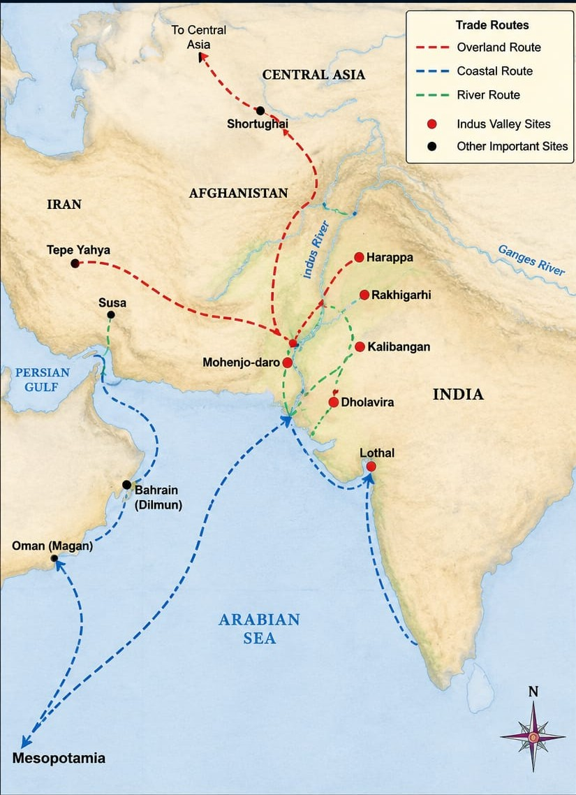

Visualizing the production and global connections of the Indus Civilization.
Wheat and Barley were the core commodities and barter currency.
Factory-level production of Beads, Jewelry, and standardized Seals.
Connection from the Persian Gulf to the Indian coast.
Surplus/High Output Deficit/Import

Historical visualization of the Maritime (Blue), Overland (Red), and River (Green) trade routes connecting Meluhha to the ancient world.